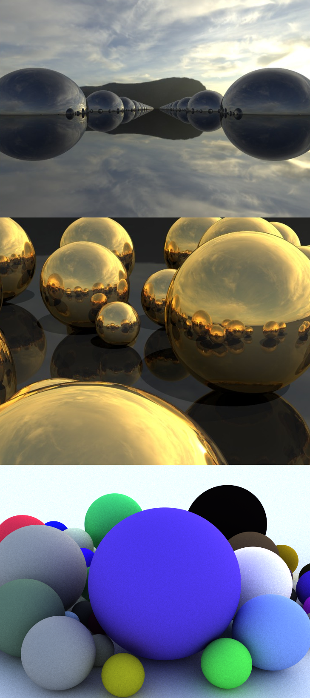

Project
GPU Ray Tracing
//Real-time GPU Ray Tracing in Unity.
The Motivation
With the release of Nvidia RTX graphics rendering development platform. 'GPU Ray Tracing' has become a graphics buzz word. Joining the hype train I took a look at some of the GPU Ray Tracing capabilities in Unity.
 Following the amazing tutorial found here, I took upon it as a graphics programming enthusiast to try implementing and truly understanding Ray Tracing. Seen on the left, are some progression images of the implementation process. The implementation is available on GitHub. The main motivation of learning ray tracing personally, was in the technique's utilization of compute shaders. I'm fascinated in the potential utilization of compute shaders in my future projects. I have seen amazing applications of compute shaders ranging from particle effects to terrain erosion simulation.
What I Learned
Ray tracing in real-time graphics served as a worthy pursuit in my growing repetoire of graphics programming techniques. In regards to rendering maths, the argorithms used in the tutorial were well summarized and referenced. I recommend anyone interested in graphics programming to investigate. The relief of finally understanding what ray tracing is all about was what made this project worth pursuing. Instead of it being this vague theory, I now know the potential applications and implications of ray tracing.